从认识一棵树，到选对一块板，再到别把它用坏——写给准备真正上手木头的白笑。
这一章解决一个问题：木头为什么会硬、会翘、会裂。弄懂了，后面所有「怎么选、怎么用」都是推论。
把一根树干锯断，从外往里依次是：树皮、形成层（cambium，负责长粗的活细胞层）、边材（sapwood，还在运水的浅色外圈）、心材（heartwood，已经退休的深色内芯），最中间是髓心。
对做东西的人来说，这里面只有两个词要记：心材和边材。心材细胞停止工作后，会沉积树脂、单宁这类填充物，所以颜色更深、更耐腐、更稳定——黑胡桃那种巧克力色、白橡的耐水，都是心材的功劳。边材颜色浅、含水多、容易被虫蛀。买黑胡桃板时看到板边缘有一条发白的窄带，那就是边材，正经桌面料会把它裁掉或压低价格。
年轮则是「一年长一圈」的产物：春天长得快、细胞壁薄，叫早材，颜色浅；夏秋长得慢、细胞壁厚，叫晚材，颜色深。一深一浅，就是你看到的纹理。年轮越密，通常意味着这棵树长得越慢、材质越紧实——同是松木，慢生长的樟子松就比速生的辐射松紧实一些。
这是木材知识里第一个反直觉的点。软木（softwood）＝针叶树的木材，松、杉、云杉、雪松都算；硬木（hardwood）＝阔叶树的木材，橡木、枫木、胡桃木、榉木都算。这是植物学分类，不是硬度分级。
大多数时候硬木确实更硬，但反例不少：轻木（balsa，全世界最软的商用木材）是正经「硬木」，而有些针叶材比部分阔叶材还硬。所以判断一块木头到底硬不硬，别看它叫什么，看数据——也就是下一节的 Janka 硬度。
Janka 硬度（Janka hardness，把一颗直径约 11.3 毫米的钢球压进木面一半深度所需要的力）是全世界通用的木材硬度指标，常用单位是磅力（lbf）。数字越大越抗压、越抗划。
给你几个锚点建立体感：松木大约 400 到 700，属于指甲用力能掐出印的级别；橡胶木、黑胡桃在 1000 上下，日常家具够用；红橡、白蜡、白橡挤在 1200 到 1400 一档，是桌面和地板的主力区间；硬枫 1450，所以 NBA 球场和砧板都用它。第二章的图鉴里每种木头都标了这个数。
但硬度不是越高越好。越硬通常越重、越难加工、越贵，钉子进去也越费劲。做抽屉内胆用 300 分的桐木恰到好处，用 1450 分的硬枫属于炫技。
木头是吸湿性材料——它会不停地和空气交换水分，直到跟环境湿度打平，这个平衡点叫平衡含水率（EMC，equilibrium moisture content）。国内室内环境的平衡含水率大致在 8% 到 15% 之间浮动：北方冬天供暖季能干到 6% 上下，南方梅雨季能湿到 15% 以上。
麻烦在于：含水率变，尺寸就变。而且三个方向变得极不均匀——
顺纹方向（沿树干长度）：几乎不动，胀缩约 0.1%，可以忽略。
径向（沿半径、垂直年轮）：胀缩约 3% 到 5%。
弦向（沿年轮切线）：最能折腾，胀缩约 6% 到 10%，大约是径向的两倍。
这组数字是全部木工设计的地基。一块 800 毫米宽的实木桌面，从梅雨季到供暖季，宽度方向真实变化能有好几毫米——你把它四边框死、跟横向的木条硬粘，它胀的时候就顶裂框，缩的时候就自己拉裂自己。木头开裂多数不是木头的错，是设计没给它留活路。第五章讲具体怎么留。
同一根原木，下锯方式不同，出来的板性格完全不同。弦切板（plain sawn，刀路沿年轮切线）出材率高、便宜，板面是山峰状的「大花纹」，但因为板面正对弦向，最容易杯翘变形。径切板（quarter sawn，刀路穿过圆心）板面是平行的直纹，尺寸稳定得多，但出材率低、价格高，常用在乐器、高档地板和讲究的桌面上。
买板时认纹路就能分辨：大山纹＝弦切，密直纹＝径切。同一批板里挑直纹多的，稳定性白赚一截。
「实木不如人造板稳定」这句话是真的，而且不丢人。实木在动，人造板用交叉结构或碎料互相锁死了这种运动。所以大平面（柜体侧板、门板芯）工业界几乎都用人造板，实木负责露脸的桌面、腿脚和框架。全屋纯实木不是消费升级，很多时候是给自己埋变形的雷。
国内市面上你真会碰到的木头就这十来种。每张卡给四个数：Janka 硬度、密度、价格档（¥ 到 ¥¥¥¥）、稳定性，再加一句「适合」和一句「别拿它」。
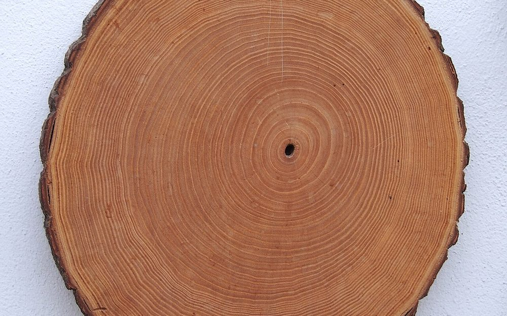
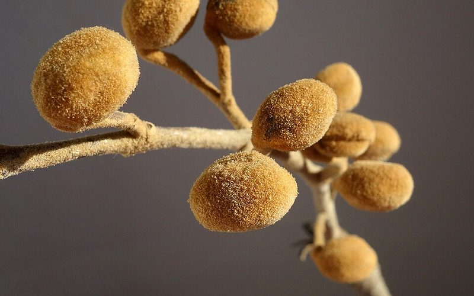
产地：中国原产，华北到长江流域遍布，河南、山东为主产区；日本、北美有引种。
轻得离谱（大约是水的四分之一重），却出奇地不爱变形，日本人拿它做和服柜有几百年了。防潮防虫也不错。
适合：抽屉侧板与内胆、收纳盒、轻量层板、桐木拼板置物。
别拿它：做承重结构和桌面——指甲一掐一个印。
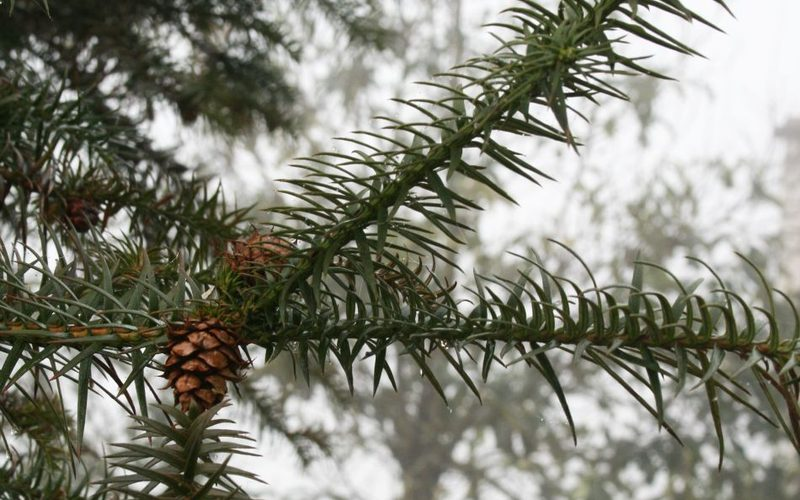
产地：中国特有速生用材树种，南方十几个省份都种，福建、江西、湖南为主产区。
国产速生材的代表，有股清香（杉木醇），便宜大碗。床板、桑拿板、吊顶说的基本都是它。节疤多，质地松。
适合：床板、隐蔽衬板、阳台吊顶、不讲究的搁板。
别拿它：做桌面和外露家具——软、起毛刺、节疤观感廉价。
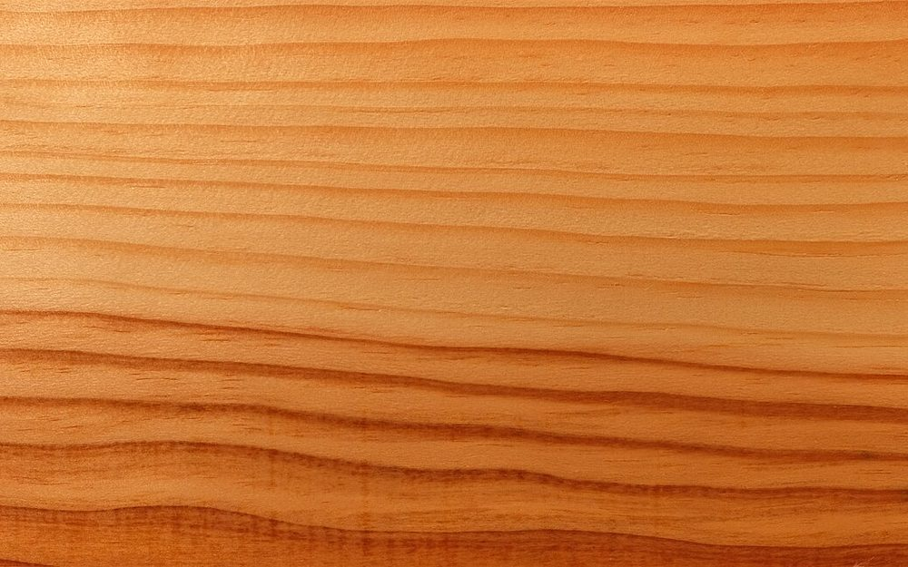
产地：樟子松产中国东北与俄罗斯；辐射松产新西兰、智利；欧洲赤松产北欧俄罗斯。
入门 DIY 的国民木材，指接板、儿童家具、宜家低价线的主力。好锯好钉，但软、有松脂、爱变形，节疤日久会发黄凸出。
适合：练手项目、儿童房家具、画框、搁架、做旧风。
别拿它：做需要体面五年以上的桌面——凹痕和黄变躲不掉。
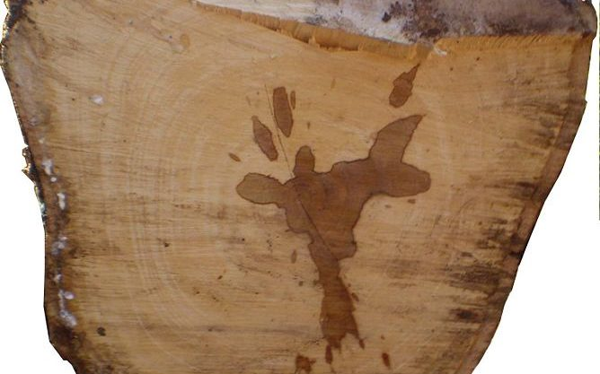
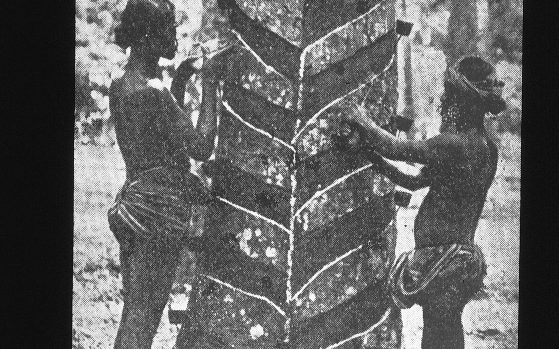
产地：原产亚马逊，现主产泰国、马来西亚、印尼；中国海南、云南西双版纳有种植。
割完乳胶退役的橡胶树，东南亚供应量巨大，是「实木性价比」三个字的化身。颜色浅、纹理平淡，特别吃染色，很多深色「实木家具」其实是它染的。
适合：桌椅框架、台面、预算有限但想要真实木的一切。
别拿它：当橡木买——橡胶木不是橡木，差一个字差两三倍价钱，商详页爱混着写。
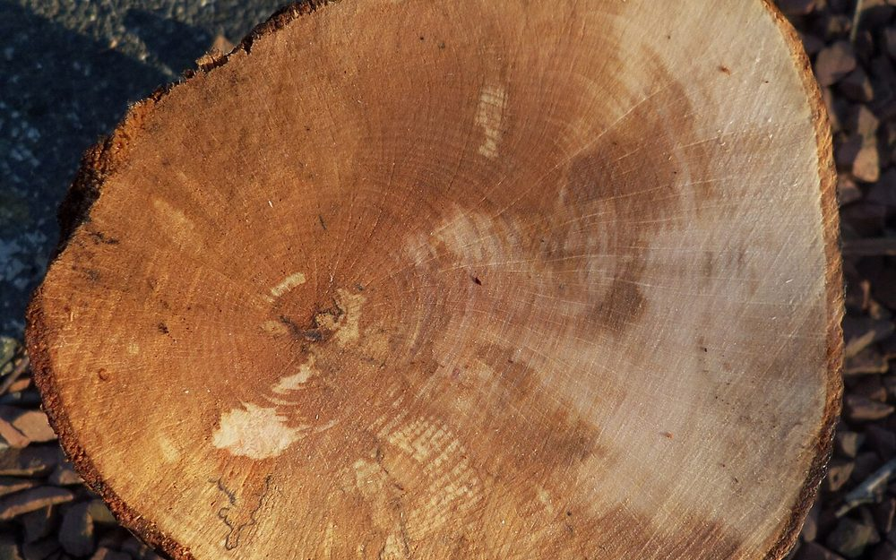
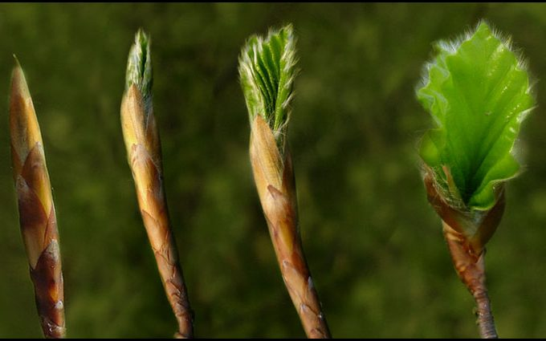
产地：欧洲榉产德国、罗马尼亚一带；国产榉（榉树）产长江流域，明清家具用的就是它。
质地细腻均匀、没有大导管孔，掉渣少、手感光滑，所以是欧洲儿童玩具和椅子的标配材，蒸汽弯曲性能一流（曲木椅多用它）。缺点是干缩大，干燥不到位就变形开裂。
适合：儿童玩具与家具、椅子、弯曲部件、厨具柄。
别拿它：做大幅面整板桌面——它是十二将里最爱动的一个。
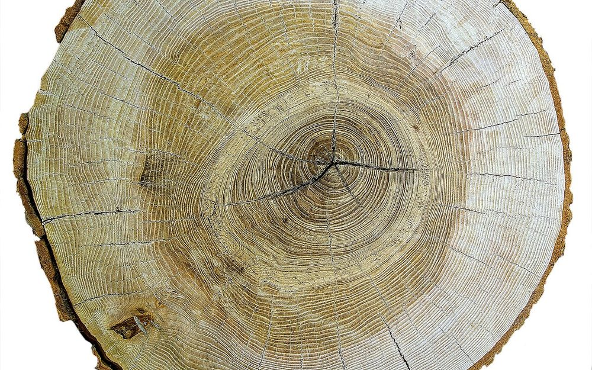
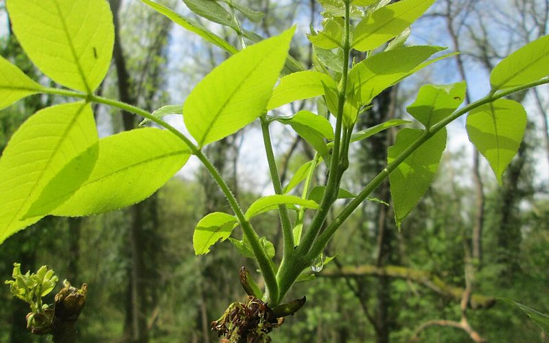
产地：白蜡木主产北美东部与欧洲；同属的水曲柳产中国东北、俄罗斯远东，价更亲民。
纹理粗犷大气、韧性和抗冲击性突出——棒球棒、锤柄、雪橇都是它。北欧风和日式原木风桌面的头号选手。水曲柳是它的东北亲戚，同属不同种，性格接近、价格更亲民。
适合：餐桌书桌面、椅子、球棒工具柄、一切要「弹性＋颜值」的地方。
别拿它：追求细腻无孔手感的场景——它的导管纹摸得出来。
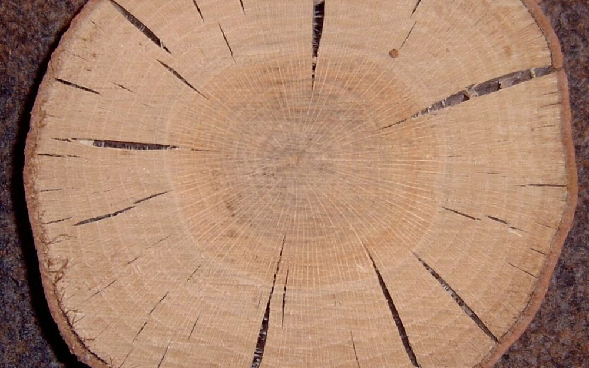
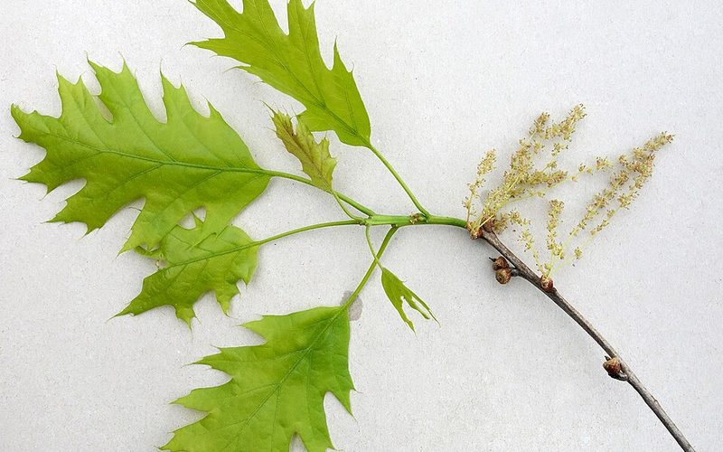
产地：北美东部，美国中北部产量最大；国内红橡基本都是美国进口。
北美家具与地板的传统主力，纹理开放豪迈，价格比白橡友好。但它的导管是贯通的——一块红橡端头对着肥皂水吹气，另一头真能冒泡。
适合：室内家具、地板、门、楼梯。
别拿它：碰水的一切——户外、浴室、砧板。水顺着导管往里灌。
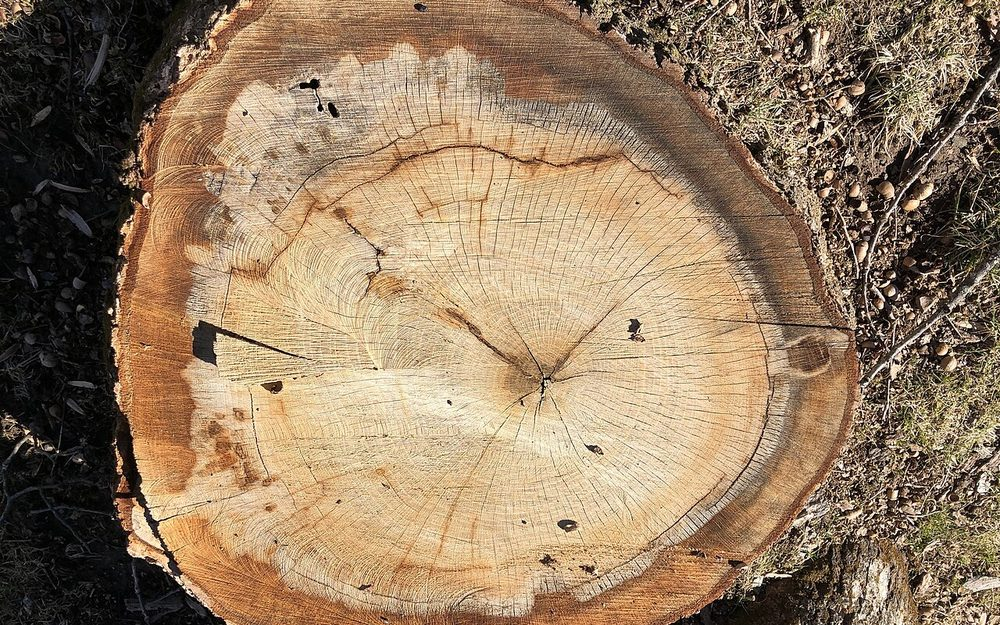
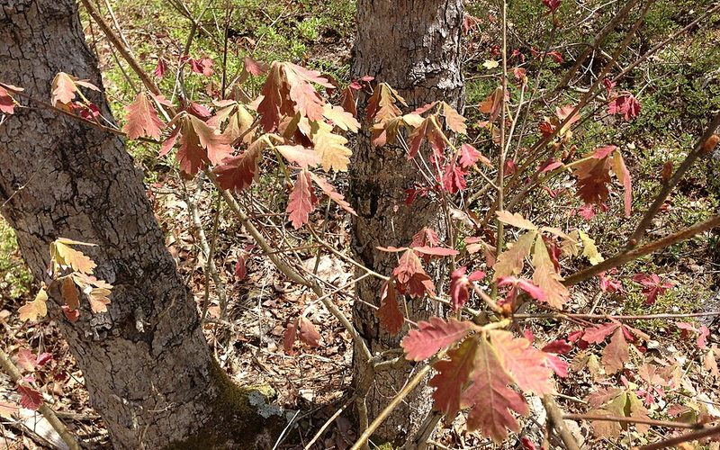
产地：北美东部；欧洲的夏栎为近亲，法国橡木桶用的是它。
红橡的贵价兄弟，导管被侵填体（tylose，心材里长出的堵塞物）封死了，所以耐水耐腐——威士忌酒桶和船板选它不是情怀，是物理。径切面还有漂亮的虎斑纹。
适合：高档桌面、地板、户外家具、一切「橡木质感＋要耐用」的场景。
别拿它：省预算的项目——红橡能干的活别多花这份钱。
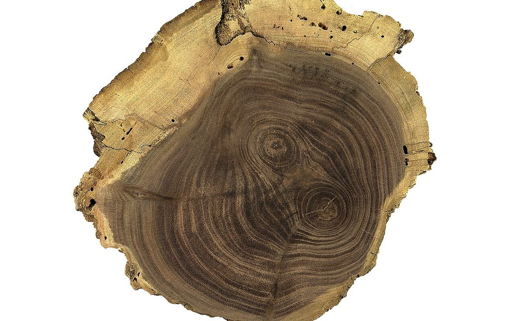
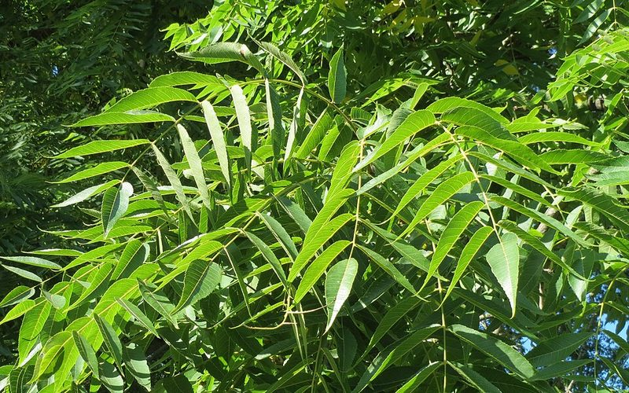
产地：北美东部特产，美国中西部（密苏里、印第安纳一带）质量最好；国内全靠进口。
北美硬木里的门面担当：巧克力色心材、稳定性顶级、加工性温顺，是「中产桌面」的默认答案。注意它其实不算特别硬——比红橡白蜡都软，桌面会留下生活痕迹。
适合：桌面、电视柜、工艺品、一切想要高级感的地方。
别拿它：当硬度买——买它买的是颜色和稳定。另外「南美胡桃木」是豆科的另一种树，不是黑胡桃，认准 Black Walnut。
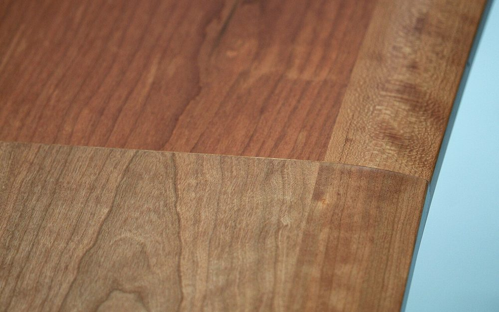
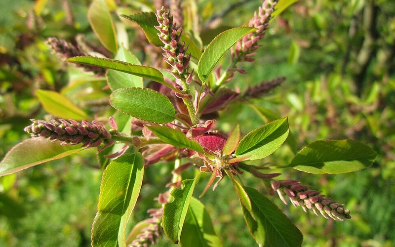
产地：北美东部，宾夕法尼亚州产的公认最优；注意它不是结樱桃的果树品种。
刚做好时是不起眼的浅粉棕，见光氧化几个月后转成温润的红棕色，是少数「越用越好看」的木头。质地细腻，刀感顺滑，木匠普遍偏爱。
适合：书柜、小家具、盒子、饰面——能陪你变老的东西。
别拿它：新做好就摆固定物件——盖住的地方晒不到，会留下一块浅色印子。
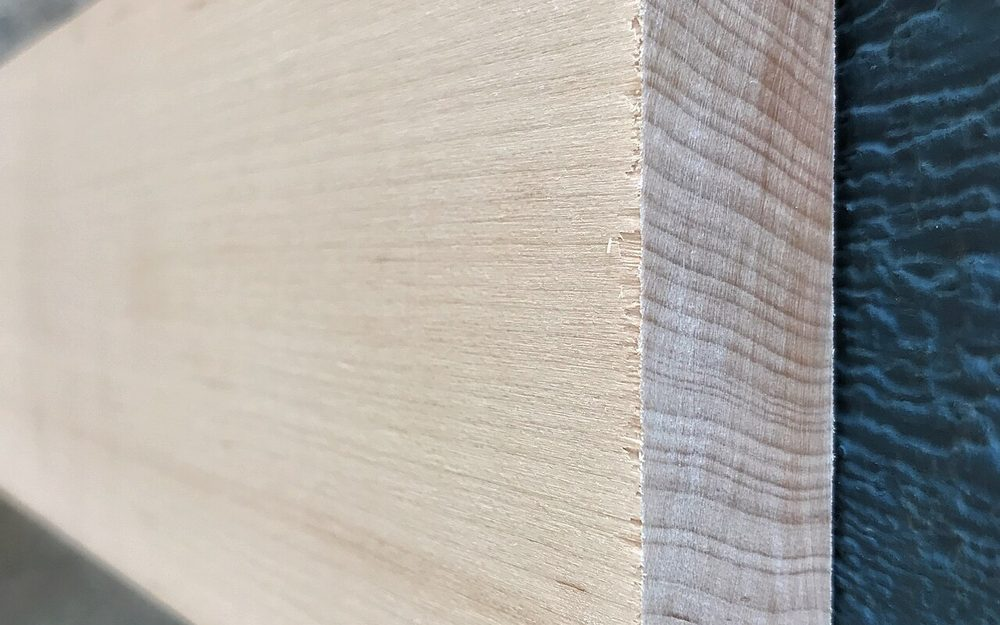
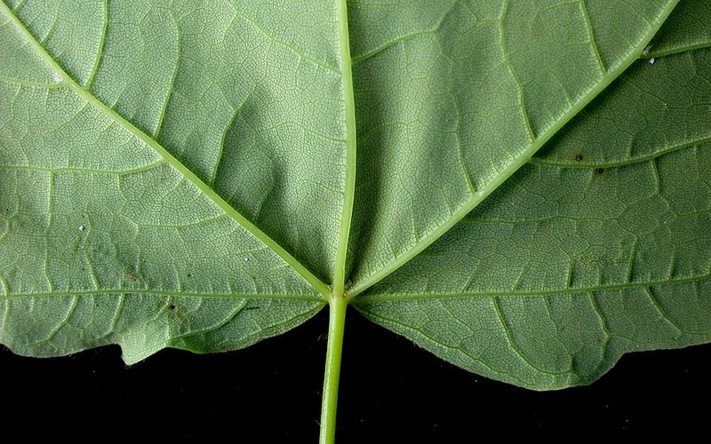
产地：北美东北部与加拿大东部；枫糖与硬枫木出自同一棵树。
十二将里的硬度榜首，质地致密到近乎无孔，奶白色干净清爽。NBA 球场地板、保龄球道、吉他琴颈、专业砧板，全是它。
适合：砧板（尤其端面纹砧板）、案板、乐器、高磨损台面。
别拿它：染深色——极易染花，浅色直接用才是正解。
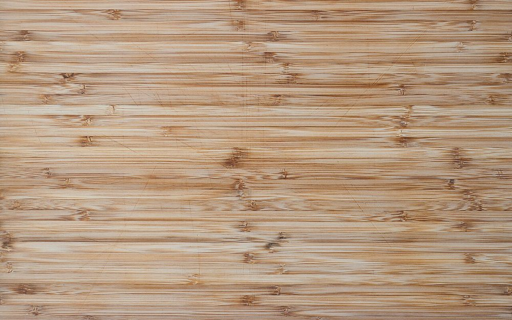
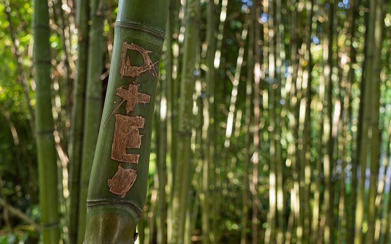
产地：中国是绝对主产国，福建、浙江、江西的毛竹林撑起全球竹产业。
严格说是草不是木，但以板材身份到处出场。竹条＋胶压成板，硬度耐磨都出色，重组竹更是能硬过多数硬木。国产供应链成熟，价格厚道。
适合：砧板、桌面板（宜家很多桌面）、地板、收纳。
别拿它：忽略胶水——竹板本质是「竹＋胶」，环保等级照人造板的标准问。
木材市场的话术陷阱基本是「攀亲戚」：橡胶木攀橡木、南美胡桃木攀黑胡桃、「金丝檀木」之类的美名多半是普通木头起的艺名。防坑只有一招：让商家写清楚英文名或拉丁学名，Rubberwood 冒充不了 Oak。写不出来的，按最便宜的那种估价。
紫檀、黄花梨、大红酸枝这些红木类名贵硬木，这份报告刻意绕开了。三个理由：它们按公斤计价，跟「做东西」的逻辑不在一个市场；染色做假、白皮充心材的水深到老玩家都常交学费；而且做家具的性能维度上，它们并不比白橡黑胡桃强多少——溢价买的是收藏属性，不是使用属性。学做东西阶段碰它，等于用学费练手。真到想收藏那天，那是另一份报告的活。
你家里的柜子，九成概率不是实木做的。人造板不是「劣质替代品」，它解决的是实木解决不了的问题：大幅面、不变形、便宜。这一章讲清楚每种板是怎么拼出来的，以及绕不开的甲醛问题。
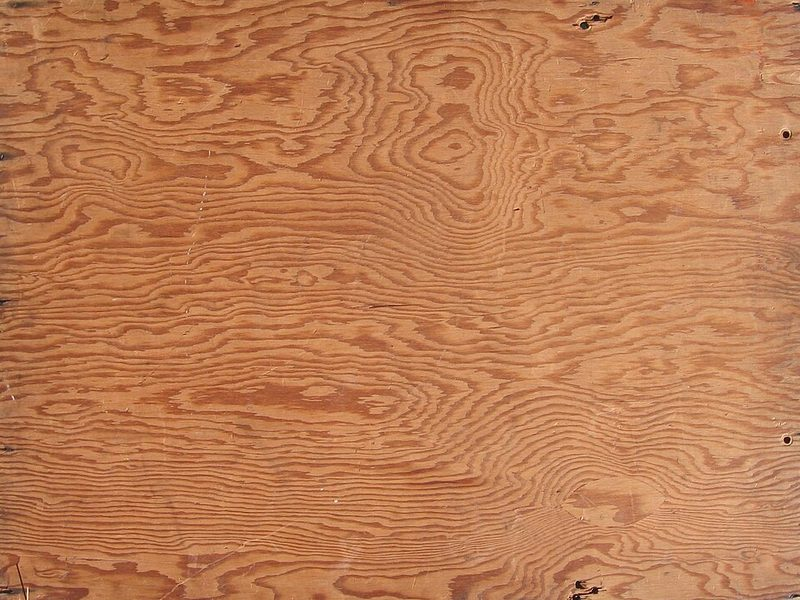
多层实木板／胶合板（plywood）——单板旋切成大薄片，一层横一层竖地奇数层胶压。
相邻层纹理互相垂直——你顶我的胀缩，我锁你的翘曲，这就是它稳定的全部原理。
人造板里的六边形战士：强度高、握钉力好、耐潮性在人造板里最强。柜体、床箱、需要受力的一切，闭眼选它。其中桦木多层板（俗称波罗的海桦，层多芯实、切面像千层饼）是柜体和 DIY 界公认的天花板。坑在低价货：芯层有空洞、重叠，切开才知道。
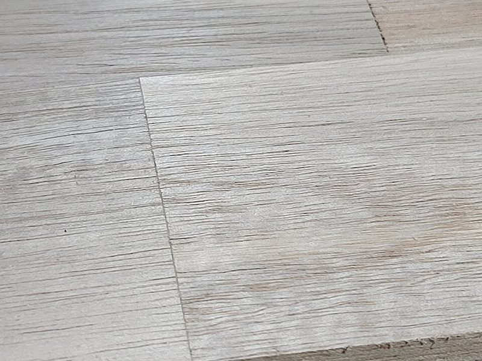
指接板／集成材——实木短料开出锯齿状指榫，纵向接长、横向拼宽。
「最像实木的人造板」，表面就是真实木，能刨能磨能开榫。用胶量比颗粒板密度板少得多。松木、橡胶木指接板是 DIY 打柜子的高性价比之选。注意它保留了实木的脾气——会变形，尤其是松木指接板做的长层板。
买拼板认三个词：直拼（整条长料侧边胶拼，板面干净无接缝痕，最贵）、有节指接／明齿（板面能看到锯齿状接痕，便宜）、无节指接／暗齿（齿藏在侧面，板面较干净，居中）。做桌面这种天天看的面，多花的那点钱买直拼，值。
细木工板／大芯板（blockboard）——木条拼芯，上下贴单板。
装修现场木工打柜子的传统主力，轻、好切、握钉不错。质量全看芯：好板芯条排得密，差板芯里全是缝，隔着面板敲一敲听声就能筛掉一批。
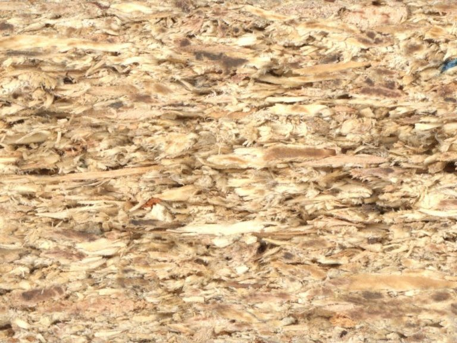
刨花板／颗粒板（particleboard）——木材打成刨花颗粒，拌胶热压。
定制柜行业的绝对主流（爱格、克诺斯邦这些进口板都是它），原因很实际：平整度极好、便宜、适合机器开孔封边。缺点同样鲜明：怕水（泡了就发胀酥掉）、握钉力差——螺丝拧第二次就滑丝，所以定制柜全靠预埋件和三合一连接件。
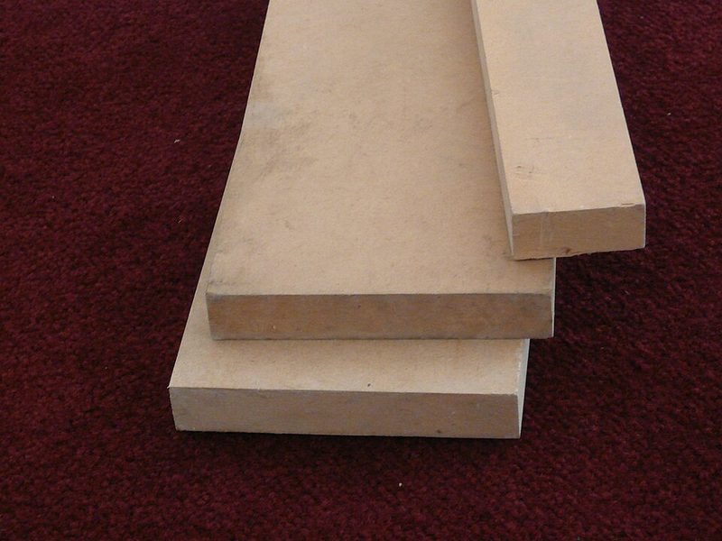
密度板／中纤板（MDF）——木材磨成纤维粉末再压实。
表面细腻到没有任何纹理，是雕花门板、烤漆板、白色家具的不二之选——铣刀怎么走都不崩边。但它是所有板里最怕水的（受潮鼓包不可逆）、最重的，且纤维越细用胶越多，环保等级要盯紧。
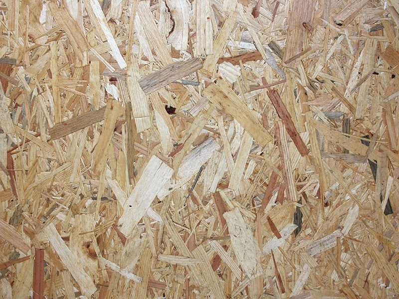
欧松板（OSB，定向刨花板）——大片刨花定向交叉铺装压制。
结构强度高，国外木结构房屋的墙板屋面板就是它。主流欧松板用 MDI 胶（一种不含甲醛的聚氨酯类胶），环保口碑好。表面粗犷，工业风爱直接裸用，精致路线需要贴面。
生态板／免漆板——不是一种板，是「基材＋三聚氰胺浸渍纸饰面」的统称。
买它等于买两样东西：面上那层耐磨免漆纸，和里面的基材（可能是细木工板、颗粒板或多层板）。问价先问基材，「生态」两个字本身不含任何环保承诺。
人造板的甲醛来自胶——传统脲醛胶（尿素＋甲醛缩合的胶，便宜好用）会持续缓慢释放甲醛，周期以年计。国标 GB/T 39600-2021 按 1 立方米气候箱法把释放量分了三级：
| 等级 | 甲醛释放限量 | 怎么理解 |
|---|---|---|
| ENF 级 | ≤ 0.025 mg/m³ | 目前最严的一档，接近木材本底释放水平，儿童房闭眼选 |
| E0 级 | ≤ 0.050 mg/m³ | 室内家具的安心线，主流品牌板基本都到这级 |
| E1 级 | ≤ 0.124 mg/m³ | 国标合格底线——合格，但大面积用在密闭卧室要掂量总量 |
限量值来源：GB/T 39600-2021《人造板及其制品甲醛释放量分级》。
四个实用判断：一，「无醛添加」指的是胶里不加甲醛（用 MDI 胶或豆胶），不等于零甲醛——木材天然含微量甲醛，这个说法本身是诚实的，怕的是被吹成「绝对零醛」。二，环保看的是总量：一屋子 E1 板的累积释放可能超过一柜子 E0，小空间大用量时等级要往上买。三，别信鼻子，要检测报告——甲醛无味，你闻到的刺激气味多半是别的挥发物。四，新柜子进屋后的头几个月勤开柜门通风——甲醛释放随温度湿度升高而加快，夏天尤其别闷着。
板材选购的优先级排序：先胶后板。同样的颗粒板，MDI 胶的 ENF 级和脲醛胶的 E1 级是两种商品；而「进口板」「实木颗粒」「生态」这些词都不改变胶的化学成分。「实木颗粒板」就是刨花板，加「实木」两个字不加一分钱成本。
选材的正确姿势不是「哪种木头最好」，而是「这个东西最怕什么」。桌面怕划、砧板怕菌、层板怕弯、户外怕水——先找到主要矛盾，材料自己就浮出来了。
| 要做什么 | 首选 | 省钱之选 | 避开 | 为什么 |
|---|---|---|---|---|
| 餐桌／书桌桌面 | 白蜡木、白橡、黑胡桃 | 橡胶木拼板、竹板 | 松木、颗粒板 | 桌面的主要矛盾是抗划＋抗水渍，硬度 1000 以上再谈颜值 |
| 书架层板 | 桦木多层板 | 松木指接板（跨度短时） | 颗粒板、MDF 长跨 | 层板怕的是常年载书后下垂；单跨尽量控制在 80 厘米以内 |
| 衣柜／柜体 | ENF 级颗粒板、多层板 | E0 级颗粒板 | 劣质大芯板 | 柜体要的是平整稳定＋封边工艺，实木在这儿纯属浪费还爱变形 |
| 造型柜门 | MDF（烤漆／膜压） | 生态板平板门 | —— | 要铣造型只有 MDF 不崩边；平板门什么板都行 |
| 床架 | 榉木、白蜡木 | 松木（预算款） | 颗粒板承重件 | 床架要的是韧性和连接件握持力，响不响全看这两样 |
| 砧板 | 硬枫（端面纹最佳） | 竹砧板、榉木 | 红橡、松杉、一切人造板 | 要致密无孔（藏不住菌）＋够硬（少掉渣）；红橡的开放导管是细菌高速路 |
| 儿童玩具／家具 | 榉木、硬枫 | 橡胶木 | 密度板、低等级颗粒板 | 啃得着摸得着的东西，要细腻无刺＋水性漆或无涂装，欧洲玩具默认榉木不是巧合 |
| 户外／花园 | 柚木、菠萝格 | 防腐樟子松 | 红橡、一切普通人造板 | 户外拼的是天然油性和耐腐，普通板材一个雨季就报废 |
| 浴室置物 | 柚木、竹（做好封闭） | 防水多层板贴面 | MDF、颗粒板 | 长期高湿，密度板类进去就是倒计时 |
| 工具柄／运动器械 | 白蜡木、山核桃木 | 榉木 | 脆性硬木 | 抗冲击要的是韧不是硬——球棒用白蜡不用硬枫是有讲究的 |
| 攀岩指力板 | 鹅掌楸木、白蜡木 | 榉木、多层桦木板 | 开放大孔材（红橡）、松木 | 指皮天天磨，要细腻无孔还不能太滑；主流厂牌 Beastmaker 用的就是鹅掌楸木（tulipwood） |
「首选」按效果排，「省钱之选」按性价比排；避开列只列真会出问题的，不是鄙视链。
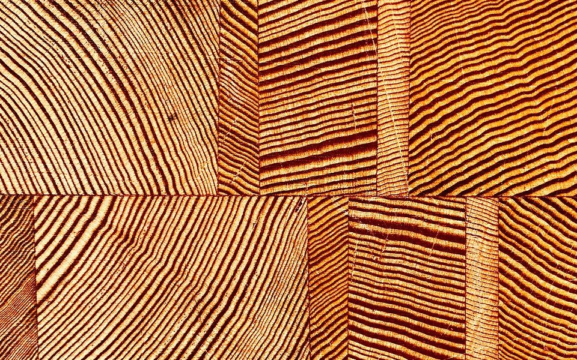
一看平整：把板立起来沿对角线瞄一眼。变形有四种形态，看的方向不同——弓弯（沿长度方向拱起）、杯翘（宽度方向卷成瓦片，弦切板最常见）、扭曲（四角不在一个平面，最难救）、侧弯（板边缘弯成弧）。扭曲的直接放弃，轻微弓弯尚可压平。多层板另看侧面芯层，层层实心不重叠的是好货。
二问含水率：实木板问一句「窑干到多少」，回答 8% 到 12% 区间的靠谱；支支吾吾说「自然干」的，做家具慎买。
三查端头和节疤：实木开裂多从端头开始，端头有细裂的板，裂纹只会往里走。节疤分两种——活节（与周围木质长在一起、色泽相近）无伤大雅甚至算风格，死节（四周有黑圈、界限分明）日后会松动脱落，留下一个洞。
四认名字：让写英文名或拉丁名进单据，「胡桃色」和「胡桃木」是两个世界。
五要报告：人造板索要甲醛检测报告，对着 GB/T 39600 的等级买，别对着导购的形容词买。
四种翘曲的观察角度不同：弓弯看侧面、杯翘看端头、侧弯看板边。示意图自绘，来源：制材缺陷通行分类。
人造板的标准幅面是 1220 × 2440 毫米（行话「4 尺 × 8 尺」，一张刚好裁一个双人床头柜柜体）。常用厚度里记住三个就够：18 毫米是柜体和层板的主力，9 毫米做背板和抽屉底，3 毫米做柜背的经济款。人造板按张计价，实木大料按材积（立方米）计价，网购实木拼板则按你报的长宽厚定制计价——同一种木头三种问法，报价单位对不上就容易被绕晕。
还有一个新手最该知道的服务：板材店和网店基本都提供代裁 + 封边——你出一张切割清单（每块板的长宽和数量），他们裁好封好边发给你。这意味着没有台锯也能打柜子，你的活只剩打孔和组装。第一个柜子项目，强烈建议这么起步。
一个够用的分配逻辑：手天天摸的、眼天天看的，用好实木；藏在里面的、靠墙贴地的，用对等级的人造板。一张桌子，白蜡木桌面配橡胶木或钢制腿，成本砍三分之一，体验几乎不损失。全黑胡桃打一屋家具不是审美，是预算的错配——同样的钱，不如把桌面从红橡升到白橡，再给儿童房的板材从 E0 升到 ENF。
第一章说过，木头一直在动。用木头的全部技术，说穿了就一句话：顺着它的纹理和胀缩来，别跟物理较劲。
板材买回来别急着开工。实木板在你家室内平放架空静置一到两周，让含水率跟环境打平——木材市场的仓库和你家客厅是两种气候，跳过这一步，做完的东西头一个换季就给你演变形。人造板可以缩短到两三天。
沿着纤维方向刨削叫顺纹，刨出来光滑；顶着纤维方向走叫逆纹，会撕出毛茬——手刨或修边机走一刀就知道方向对不对，起毛就掉头。端面（木板两端露出纤维断口的面）是另一回事：它吸水的速度是侧面的十几倍，也最容易开裂，所以老木匠给端面上蜡封油从不偷懒。锯切端面时垫一块废木再锯，出口不崩茬。
三条落地规则，能避开绝大多数开裂：
宽面别锁死：实木桌面固定到桌架，用能滑动的伸缩件（8 字扣、Z 形扣），别四角打死螺丝——要允许桌面宽度方向自由伸缩几毫米。
横竖别硬粘：长距离把两块纹理方向垂直的实木胶死（比如给桌面横着粘一根挡条），等于让两套胀缩打架，输的是木头，裂给你看。
面板要浮装：柜门里的实木芯板要插在框槽里悬浮，不涂胶——传统攒边打槽装板的智慧全在这，芯板能在槽里自己胀缩。
木工胶（白胶／黄胶这类聚醋酸乙烯酯胶）有个反直觉的事实：顺纹面对顺纹面的胶合，强度超过木材本身——拉力测试时裂的是木头不是胶缝。但端面吸胶严重，端面对接的胶合强度很弱，所以端面连接必须借助螺丝、木销或榫头。
螺丝进硬木必须预钻孔（钻头直径约等于螺丝去掉螺纹的芯径），省这一步的代价是板子当场劈裂。连接方式的进阶阶梯大致是：螺丝＋胶 → 木销／饼干榫 → 传统榫卯，强度和工时同步上升，家用项目做到第二级已经很体面。
| 涂层 | 手感与观感 | 防护力 | 适合 | 代价 |
|---|---|---|---|---|
| 木蜡油 | 开放毛孔、原木手感最好 | 弱（防泼溅不防泡） | 桌面、家具、想摸到木头的一切 | 半年到一年要补涂，好在补起来极简单，局部打磨直接涂 |
| 水性木器漆 | 薄膜、低气味 | 中 | 儿童家具、室内门窗套 | 耐磨耐热一般 |
| 聚氨酯清漆 | 成膜厚、亮或哑可选 | 强（防水耐磨） | 餐桌面、吧台、高频水渍区 | 膜破了没法局部补，得整面重做 |
| 食品级矿物油＋蜂蜡 | 无膜、可入口接触 | 弱 | 砧板、餐具、儿童啃咬件 | 一两个月一补，好在成本几块钱 |
| 不处理 | 最原始 | 无 | 隐蔽件、试验品 | 水渍手汗直接吃进木头，基本不可逆 |
通用手序：180 目 → 240 目砂纸打磨，除尘，薄涂多遍优于厚涂一遍；砧板绝不用普通清漆——膜会被刀切碎混进食物。
实木家具的养护只有三件事：远离剧变（别贴着暖气片和空调出风口放）、挡住紫外线（阳光直晒半年，樱桃木深一号、胡桃木褪一号）、热和湿垫一下（热锅垫隔热垫、水杯垫杯垫）。做到这三条，一张好桌面陪十年起步。
新手最常见的翻车不是手艺，是顺序：先买了木头才想做什么。正确顺序永远是先定物件 → 找到它最怕什么 → 按第四章的表选材 → 再按这一章的规矩加工。木头是耐心的材料，它只惩罚跳步的人。
数据来源：各木种 Janka 硬度与密度取自 The Wood Database（wood-database.com）的通行参考值；甲醛限量取自 GB/T 39600-2021；干缩率区间为木材科学教科书的常见范围。这些属于已查证的稳定知识。
标注为约值的部分：杉木、桐木、重组竹的硬度因产地与工艺差异较大，取的是行业常见标称区间；价格档（¥ 到 ¥¥¥¥）是 2026 年国内市场的粗略相对分档，只用于横向比价，不构成报价依据。
我的局限：这份报告没有做实测，全部来自文献与通行参考值的整理；同一木种不同批次的脾气差异，只有上手刨过才真正知道。等你开始做第一个东西，拿实物反馈回来修订它——这份报告的下一版应该由锯末参与撰写。
图片来源：全部实物照片取自 Wikimedia Commons（维基共享资源，图片带自由授权可复用），存于本项目 img/ 目录。逐张署名：白蜡木与黑胡桃标本（Roger Culos·CC BY-SA）、桐木（Agnieszka Kwiecień, Nova·CC BY-SA 4.0）、樱桃木（Böhringer·CC BY-SA 2.5）、硬枫（Stephen Ondich·CC BY-SA 3.0）、竹砧板（Julian Herzog·CC BY 4.0）、橡胶木（DXLINH·CC BY-SA 3.0）、端面砧板（Hu Nhu·CC BY-SA 4.0）、指接板（Pk0001·CC BY-SA 4.0）、胶合板（Riverswim16·CC0）、颗粒板（MatthiasKabel·CC BY-SA 3.0）、MDF（Vaderluck·CC BY-SA 3.0）、欧松板（Lionel Allorge·CC BY-SA 3.0）、松木（Kiefer Holz·CC BY-SA 3.0）、榉木（Fagus sylvatica 木质部研究图·CC BY-SA 4.0）、红橡横切面（公有领域）、白橡（Famartin·CC BY-SA 4.0）。杉木未找到质量合格的自由授权木材实照，以色块代替。树木实照取自 Commons 各物种分类目录：桐木（Hladac·CC BY-SA 4.0）、杉木（Franz Xaver·CC BY-SA 3.0）、橡胶木（OTIS Archive·CC BY 2.0）、榉木（Marianne Cornelissen-Kuyt·CC BY-SA 4.0）、白蜡木与黑胡桃与樱桃木（AnRo0002·CC0）、红橡（Hladac·CC BY-SA 4.0）、白橡（Famartin·CC BY-SA 3.0）、硬枫（Gilles Ayotte·CC BY-SA 4.0）、毛竹（Jules Verne Times·CC BY-SA 4.0）；松木的树照同样未找到合格图，该卡只有木材照。示意图（树干截面、三向胀缩、弦切径切、翘曲四形态、两张数据图）均为本报告自绘。